沖縄そば巡りの旅、今回は北谷町吉原にある沖縄そば専門店「まるち 北谷店」さんを訪問しましたね🍜 2025.3に食べました😄
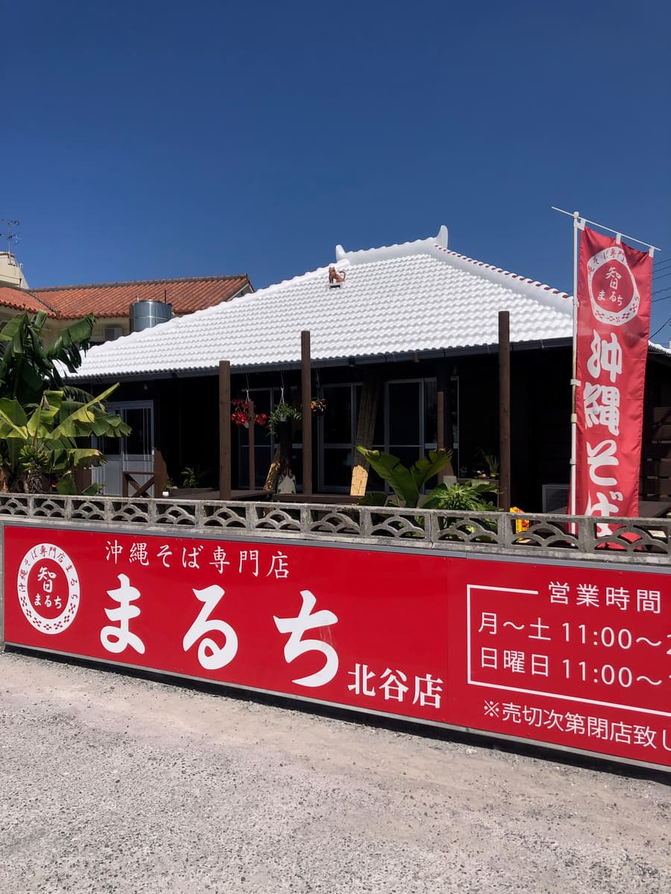
「まるち」さんとの出会いは、まるち中城店が最初で、その後南城市つきしろ店にもお邪魔していますので、今回は実に3店舗目の訪問となりますね。
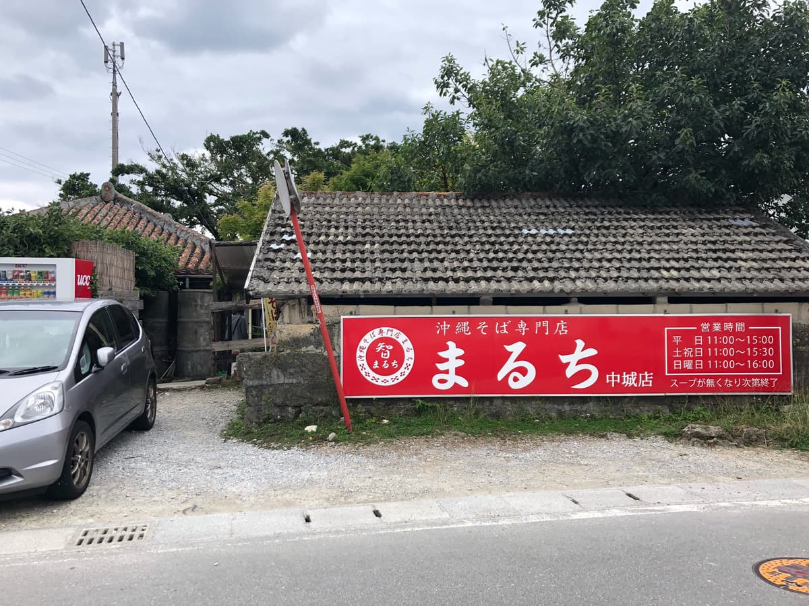
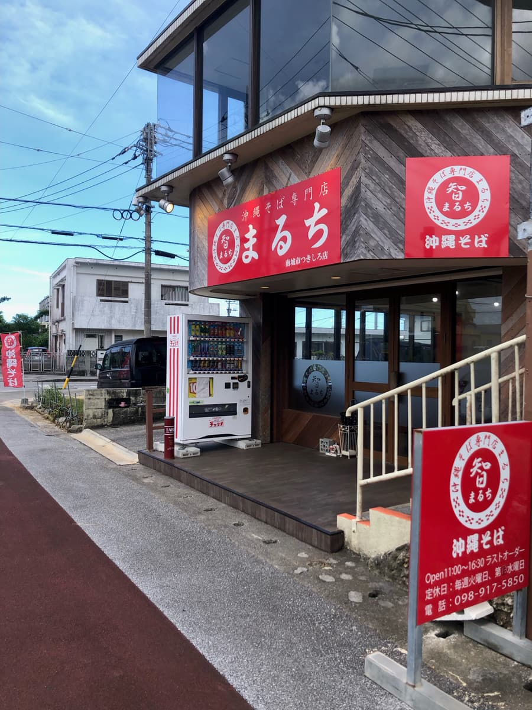
中城店も南城市店も人気店でしたが、こちら北谷店も例外ではなく、オープンと同時にお客さんがぞろぞろと並んでいましたよ 😲
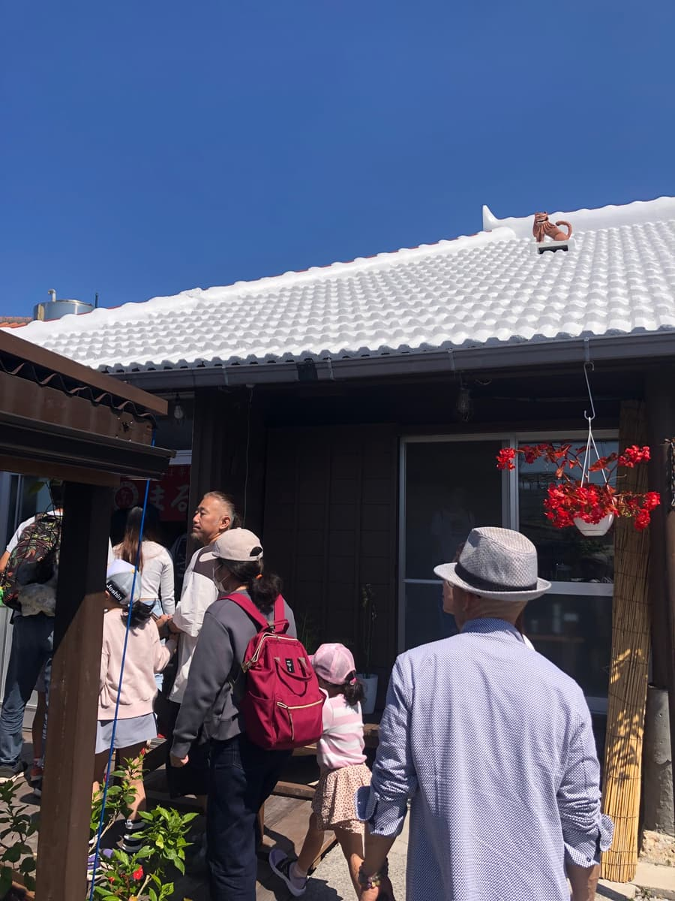
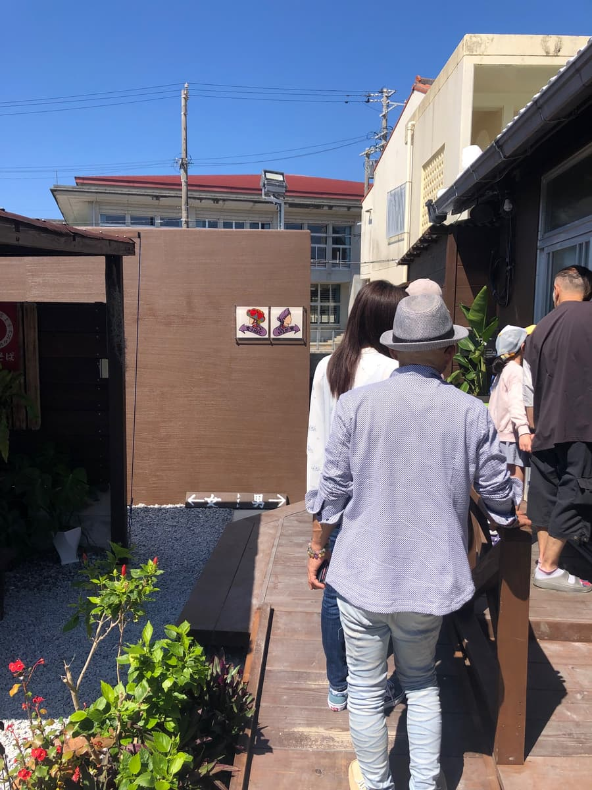
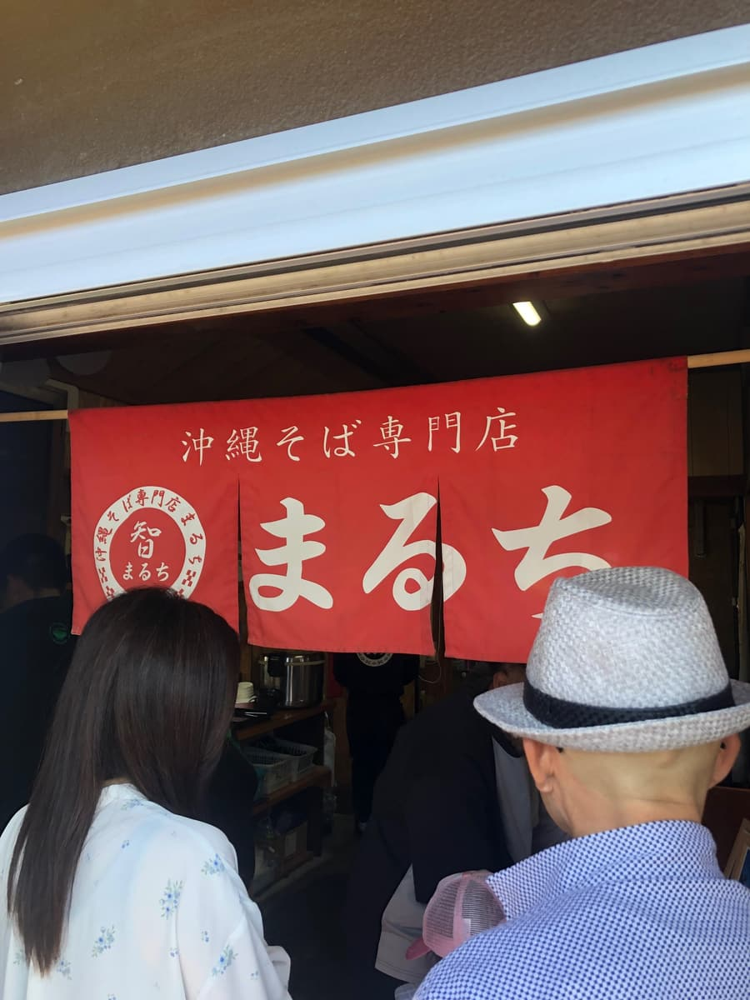
北谷町という観光客が多いエリアにあることもあってか、地元の方から観光客まで幅広くお客さんが集まっているようで、まるちブランドの人気の高さをあらためて実感しましたね。
外観は沖縄らしい白い琉球瓦の屋根が青空に映えていて、シーサーが屋根の上で出迎えてくれていますね 🦁 店内だけでなく、砂利敷きの屋外にもピクニックテーブルが並んでいて、天気の良い日には外で食べるのも気持ちよさそうですね✨ 古民家風の建物ですが、中はきれいに改装されていて、落ち着きながらもスッキリとした印象でしたね。
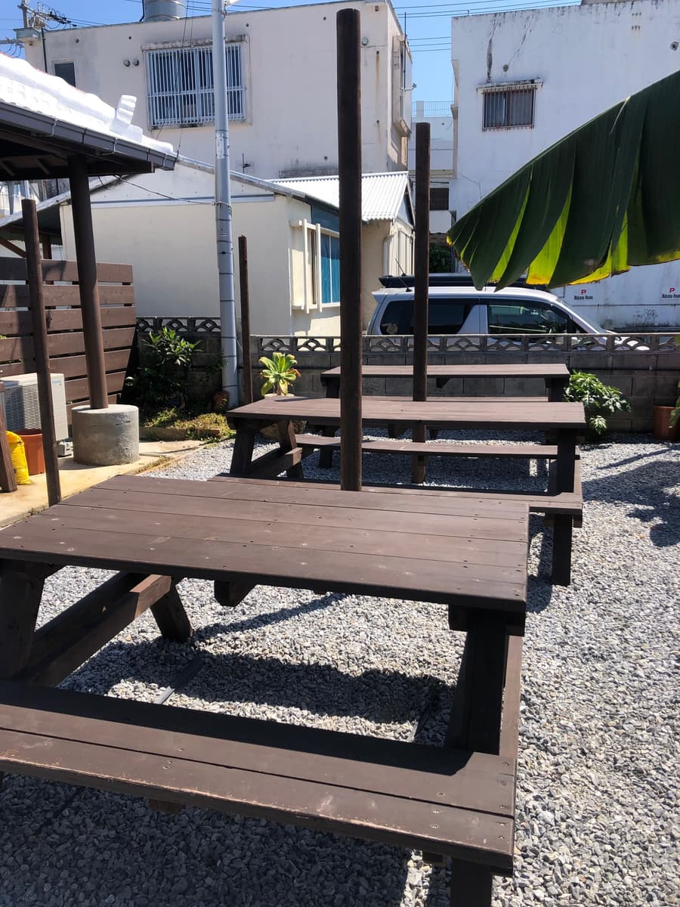
さてメニューを見ると、まるちさんの大きな特徴はスープと麺をそれぞれ3種類から選べるというシステムですね。スープは「あっさりスープ（当店秘伝）」「こってりスープ（当店自慢）」「塩スープ（シンプル・イズ・ベスト）」の3択。中城店でのあっさりスープ体験が記憶に残っていたので、今回は「こってりスープ」を選んでみましたね💪 県産鶏と豚骨を長時間煮出した濃厚仕立てとのことで、期待が膨らみますね🤤 麺は「細麺」「平麺」「ちぢれ麺」から選べ、今回は店員さんのオススメのままに「ちぢれ麺」をチョイスしましたね。
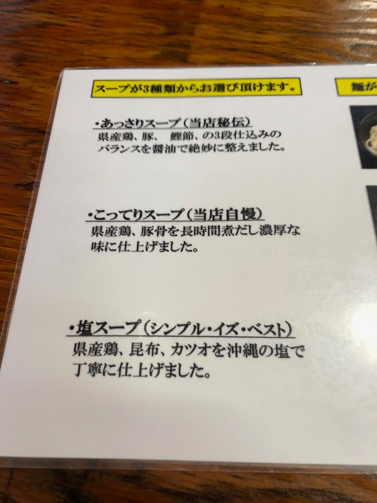
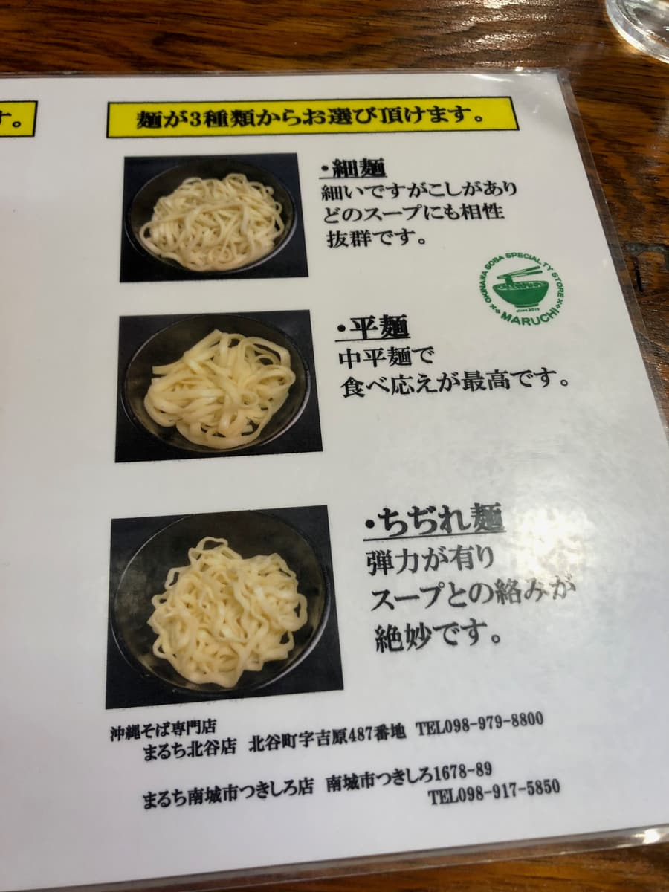
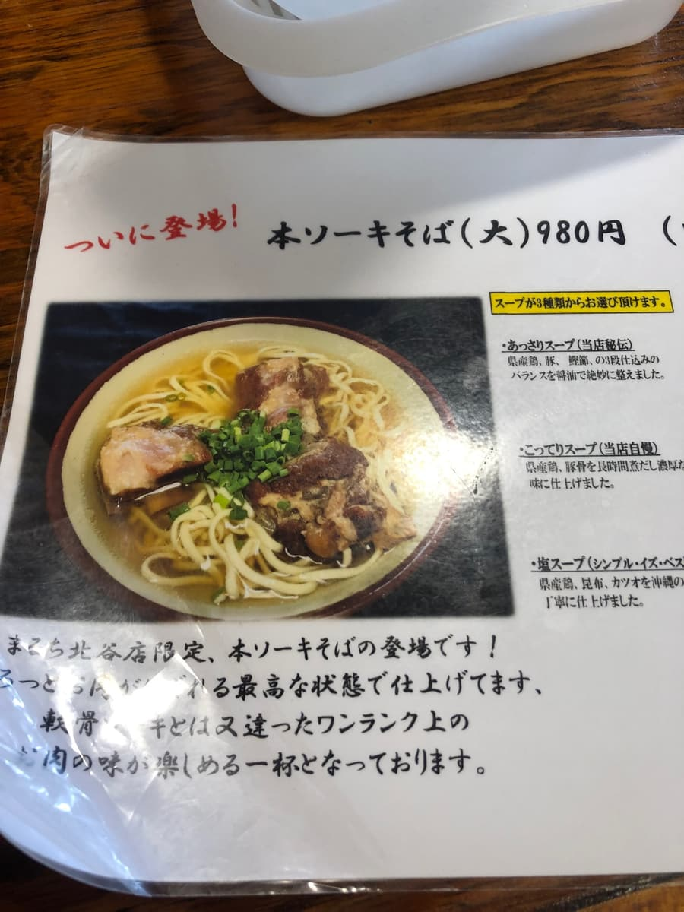
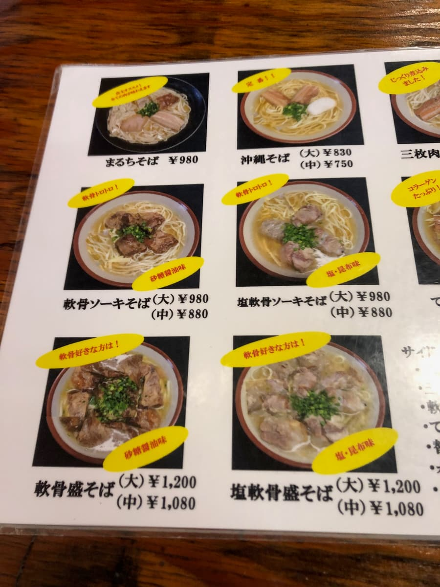
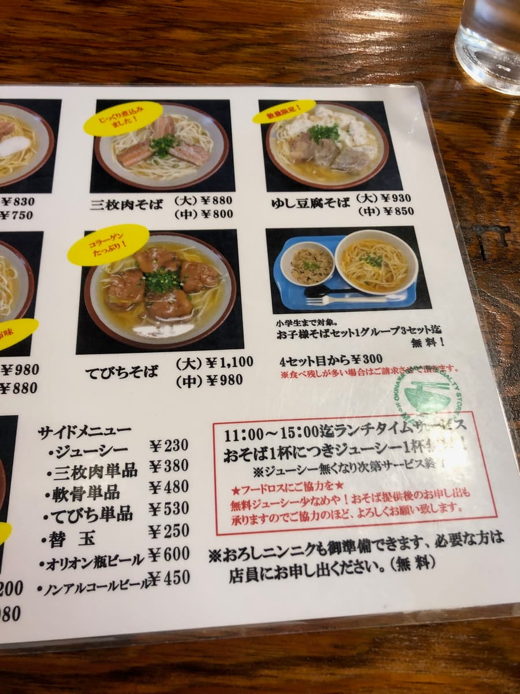
今回注文したのは北谷店限定メニューの「本ソーキそば（大）980円」。ランチタイムサービスのジューシー付きというのも嬉しいポイントでしたね 🍚
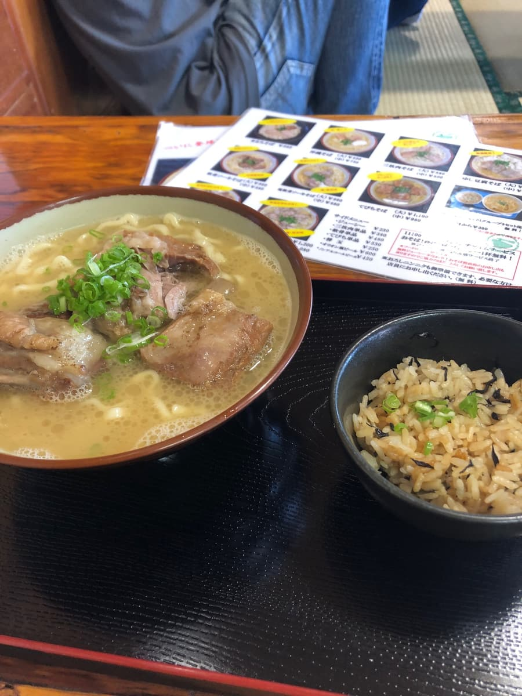
いざ運ばれてきたどんぶりを前に、まずはスープを一口。こってり系らしく鶏と豚骨の出汁感はしっかりとありますね。ただ、塩味がやや強めに効いていて、ナンクルさんや上原そばさん、月黒木さんのような豚骨ベースのクリーミーでまろやかな滑らかさとは少し違う印象を受けましたね。こっくりした旨みというよりは、塩が前に出てくる感じですね 🤔
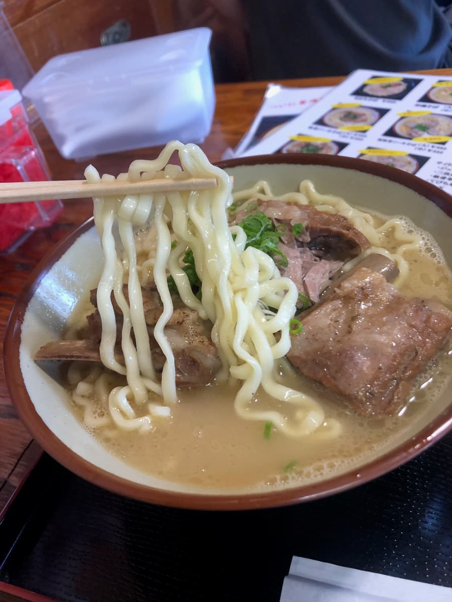
ちぢれ麺はというと、中太タイプでほどよいもちもち感があって、スープとの絡みもなかなか良いですね😊
具材の本ソーキは、全体的にトロトロとよく煮込まれていますが、部位によっては筋感が残っている箇所もあり、柔らかい部分と肉感のしっかりした部分が混在している印象でしたね😄 そして、ランチタイム限定でサービスついてきたジューシーが嬉しい！沖縄そばにジューシーの組み合わせはやっぱり最高ですよね✨
評価（9点/15点）：まるちさん、中城店・南城市つきしろ店・北谷店と3店舗食べ比べてみると、どこも安定した人気があるのが分かりますね。古民家を活用したお店の雰囲気づくりや、スープ・麺を選べるカスタム性の高さが多くのお客さんを惹きつけているのでしょうね。お味は「普通に美味しい」という感じで、突出した個性というよりは安心して食べられる沖縄そばという印象ですね。それでも、オープン直後から行列ができるブランド力は本物だと思いますね✨
麺 ：★★★☆☆（3）
スープ：★★★☆☆（3）
具 ：★★★☆☆（3）